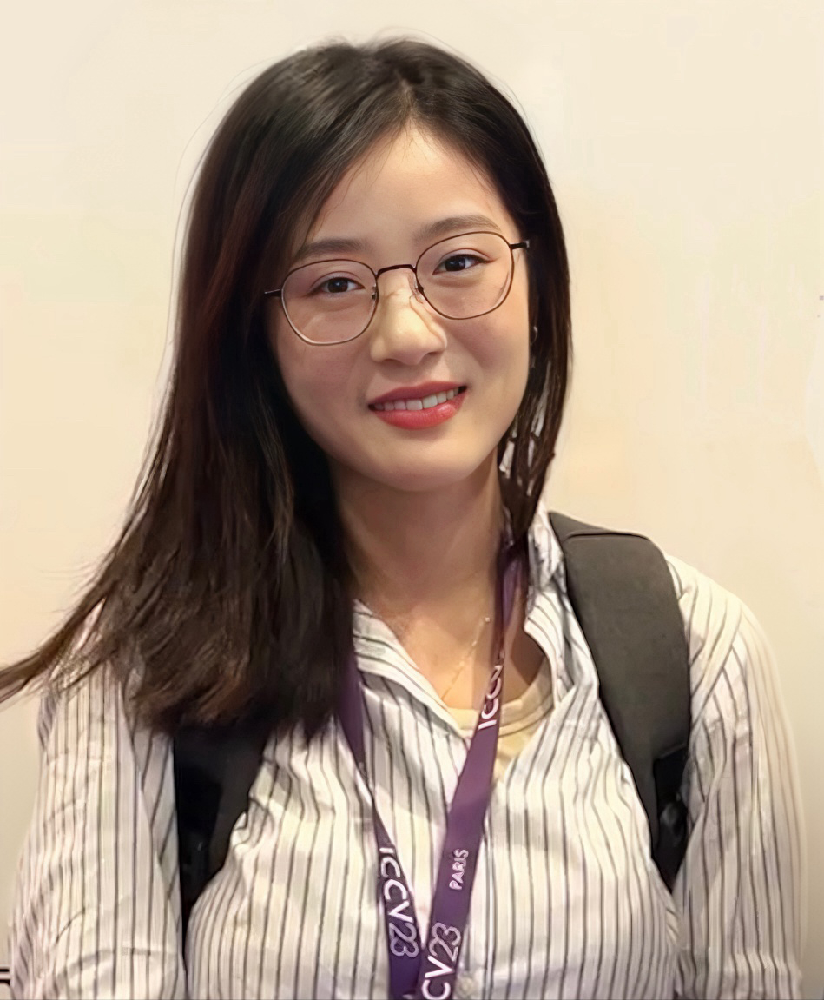

|
Chun-Mei Feng
I am currently the Research Scientist at A*STAR, Singapore. Before that, I received my PhD from Harbin Institute of Technology, Shenzhen in 2022. In 2024, I was very fortunate to be horned as the "Rising Stars in AI" by the father of LSTM, Jürgen Schmidhuber. I have published numerous peer-reviewed papers, primarily in flagship conferences such as CVPR, ICCV, ECCV, ICLR (Spotlight), MICCAI (Early Accept), ACL, AAAI, as well as journals like Nature Communications, IEEE TPAMI, IJCV, TIP, TNNLS, and TMI.
Google Scholar /
GitHub /
LinkedIn /
Twitter
|

|